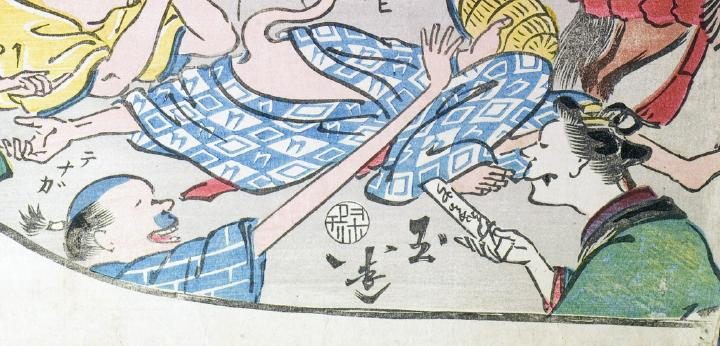

手長；テナガ，男；オトコ

右腕が長く伸びた男。向かいには、牙を生やし、札を持っている女がいる。
著作者：玉園／出典：親書誌：U426_nichibunken_0145：画本西遊記百鬼夜行ノ圖；エホンサイユウキヒャッキヤギョウノズ／日付：2009／資源識別子：U426_nichibunken_0145_0008_0000
Copyright (c)2010- International Research Center for Japanese Studies, Kyoto, Japan. All rights reserved.